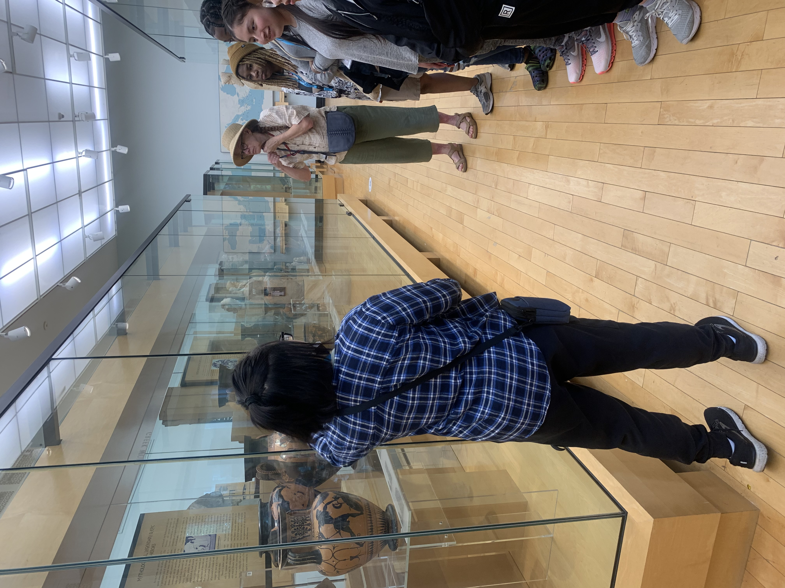
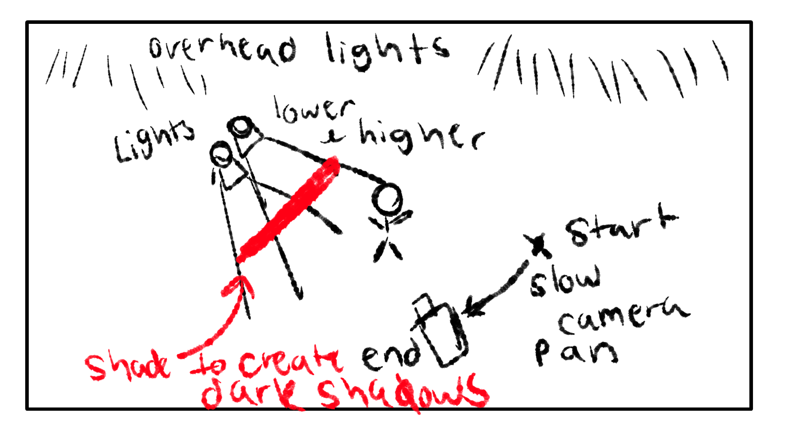
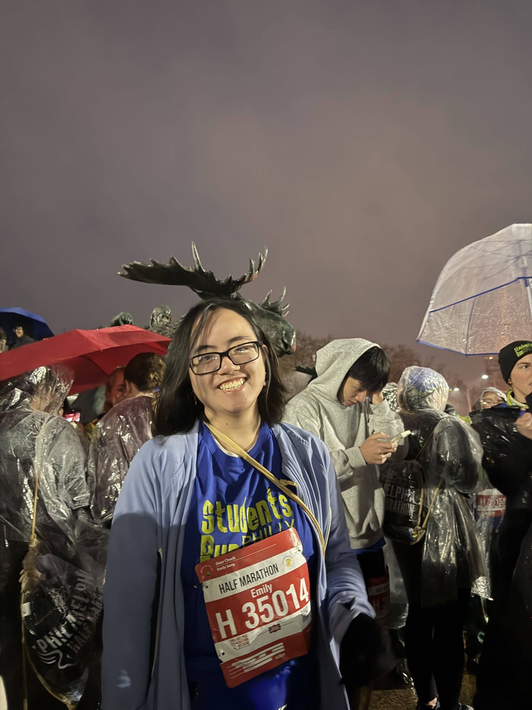

Hello! My name is Emily “Ray” Seng.
I'm a rising junior in ANIM & VFX major at Drexel, working to graduate by June 2028 with a BS and a minor in teaching.
Hello! My name is Emily “Ray” Seng.
I'm a rising junior in ANIM & VFX major at Drexel, working to graduate by June 2028 with a BS and a minor in teaching.

Using Maya and Nuke, I have created immersive media that combines 3D modeling and film, and I’m currently aiming to work well in creating fluid and story-explored motion. I also work well in presenting ideas, writing stories and narratives, and working in 2D media.

Post-graduation, I plan to seek entry in either a space meant for technical work in the animation industry in the Philadelphia region or work to support students in the same or adjacent field. I hope to be able to contribute to Philly's rich storytelling culture alongside my career goals.


In my free time, I am a junior leader at Student Run Philly Style, where I get to mentor students and assist with other leaders for races and runs!
I am also engaging in making my own projects, which you see righttt here -->